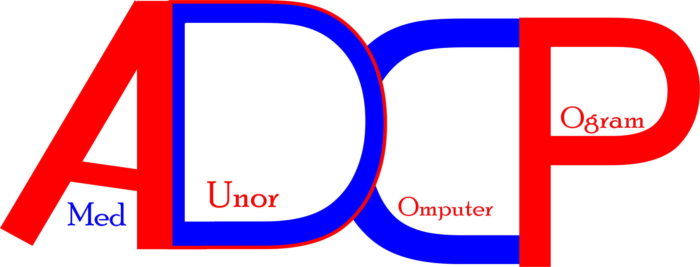

New Jerusalem AG High School
Solid Rock Foundation Academy High School
C & S Standard Foundation High School
Amed Dunor Computer Program is 100% Liberian own, wholly and sorely base in Liberia
with such service offer to school like,
New Jerusalem AG High School,
Solid Rock Foundation Academy High School, and C & S Standard Foundation High school
base in Liberia mainly in the Gardnersville Somalia Drive area.
The Program is really made to empower adults and youth in Liberia and the world at large to became full flesh and prepare for the job market.
we are happy and willing to recieve all Liberian in and around the World as the services is provided.

This page was created by Amed D. Dunor CEO, of Amed Dunor Computer Program
For accessing website vist ameddunor@gmail.com